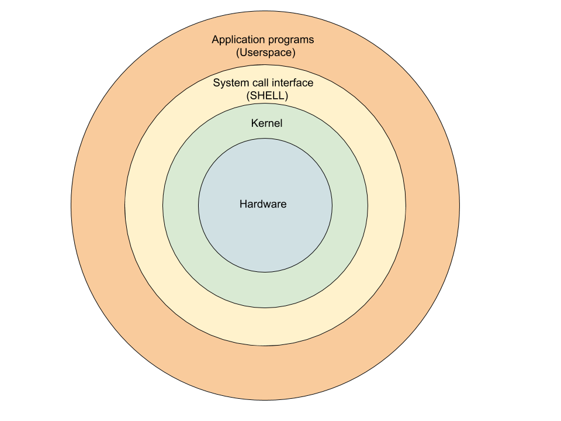
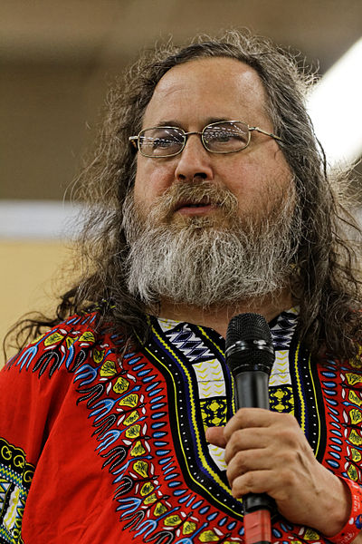

<!doctype html>
<html lang="sv">
<meta charset="utf-8" />
<title>vlinux - about Linux</title>

<!-- Mithril HTML Slideshow styles -->
<link href="../../css/mithril-slideshow.css" rel="stylesheet" />

<!-- Code formatting using highlight.js -->
<link rel="stylesheet" href="../../css/default.css">
<link rel="stylesheet" href="../../css/tomorrow.css">
<script src="../../js/highlight.pack.js"></script>

<!-- Text formatting using Markdown through showdown.js -->
<script src="../../js/showdown.min.js"></script>

<style>
    @import url('https://fonts.googleapis.com/css2?family=Ubuntu+Mono&display=swap');
    h1 {
        border-bottom: 2px solid lime;
    }
    #slide {
        font-family: 'Ubuntu Mono', monospace;
        color: lime;
    }

    ul {
        list-style-type: none;
    }

    li:before {
        content: "$ ";
    }

    ul li ul li:before {
        content: "- ";
    }
</style>


<!-- Here comes the slides in order -->
<script data-role="slide" data-markdown type="text/html">
#vlinux - about Linux
###Kenneth Lewenhagen, dbwebb
</script>


<!-- Slide -->
<script id="slide" data-role="slide" data-markdown type="text/html">
# Ways to run Linux

* Desktop
* Dualboot
* Server (physical at home)
* Server (virtual, ex DO)
* VirtualBox (virtualization)


</script>


<!-- Slide -->
<script data-role="slide" data-markdown type="text/html">
# Architecture (*nix)

* Userspace (application)
* Shell/Commands/Standard libs (libc)
* System calls (process, file, device, information, communikation)
* Kernel
* Hardware

</script>


<!-- Slide -->
<script data-role="slide" data-markdown type="text/html">

</script>


<!-- Slide -->
<script data-role="slide" data-markdown type="text/html">
# Desktop Environment

* Gnome, KDE, LXDE, XFCE, Cinnamon etc
* Window manager (WM)
* X Window System, X11, (X.Org)

</script>


<!-- Slide -->
<script data-role="slide" data-markdown type="text/html">
# Unix

* 1969, AT&T Bell Labs
* Multics - time sharing OS
<figure>
    
    <figcaption style="font-size:smaller; color: white;">Ken Thompson, Dennis Ritchie</figcaption>
</figure>
* C - portable
* Unix licens

</script>


<!-- Slide -->
<script data-role="slide" data-markdown type="text/html">
# BSD

* University of California, Berkley
* Berkley Software Distribution (OS)
* 70's - 80's
* Open sourcecode, Unix-licence (copied code)
* Trial process, BSD & Unix (-80)
* (Unix-like) FreeBSD, OpenBSD, Mac OS, GNU/Linux

</script>


<!-- Slide -->
<script data-role="slide" data-markdown type="text/html">


</script>


<!-- Slide -->
<script data-role="slide" data-markdown type="text/html">
# Stallman - GNU

* Richard Stallman 1983 - GNU Project
* GNU's Not Unix
* Freedom
* GNU Hurd


</script>


<!-- Slide -->
<script data-role="slide" data-markdown type="text/html">
# Torvalds - Linux

* Linus Torvalds 1991 - Kernel
* <strong>GNU software + Linux kernel</strong>

</script>


<!-- Slide -->
<script data-role="slide" data-markdown type="text/html">
# Where is Linux used?

* Android (kernel)
* Windows, MacOS
* 95% top 1m servers
* 85% smartphones
* Smart TV's
* Cars
* Airplanes
* 100% of the worlds 500 "Supercomputers"
* 90% of the public workload on cloud services
* 90% of Hollywood’s specialeffects.
* Facebook, Google, Twitter etc

</script>


<script data-role="slide" data-markdown type="text/html">
# Good luck!
</script>


<!-- include essential js-script -->
<script src="../../js/mithril.min.js"></script>
<script src="../../js/mithril-slideshow.js"></script>
<!-- default to theme 3 -->
<script>app.useTheme(3);</script>

</html>
